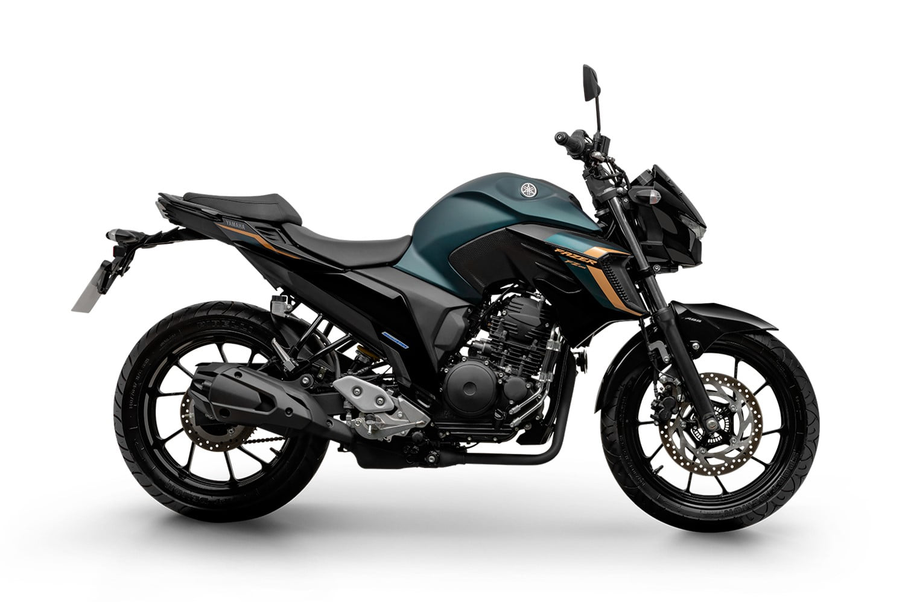
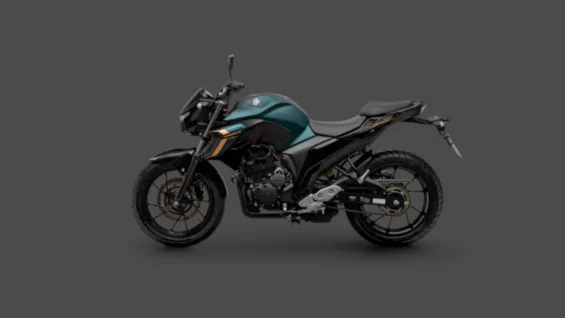
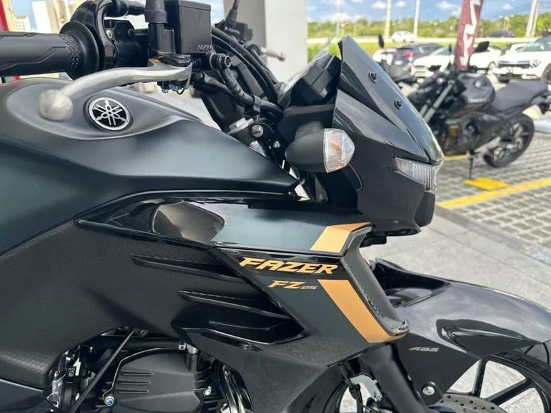

A combinação perfeita de estilo, economia e performance.

O motor de 250cc da Yamaha é lendário pela sua durabilidade e torque linear, ideal tanto para a cidade quanto para pequenas viagens.
Equipada com freios ABS nas duas rodas de série, garantindo frenagens seguras e controladas em qualquer condição de piso.
Farol e lanterna em LED que proporcionam maior visibilidade noturna e um visual moderno e agressivo.
Excelente média de consumo, chegando a fazer até 35-40 km/l dependendo da pilotagem. Economia no dia a dia!


| Motor | Monocilíndrico, 4 tempos, SOHC, 2 válvulas |
| Cilindrada | 249 cc |
| Potência Máxima | 21,3 cv (Gasolina) / 21,5 cv (Etanol) |
| Torque Máximo | 2,1 kgf.m |
| Alimentação | Injeção Eletrônica |
| Freios | ABS nas duas rodas |
| Peso em Ordem de Marcha | 151 kg |
Esta unidade está impecável, com apenas 29.000 km rodados e todas as revisões em dia. Ano 2024, cor Verde Magma exclusiva.
Chamar no WhatsApp